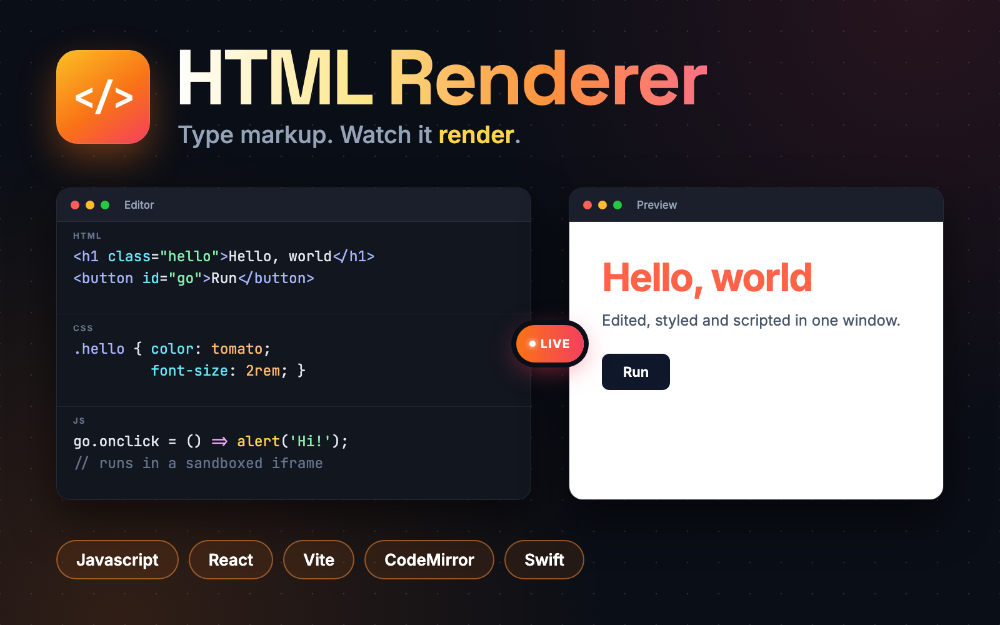
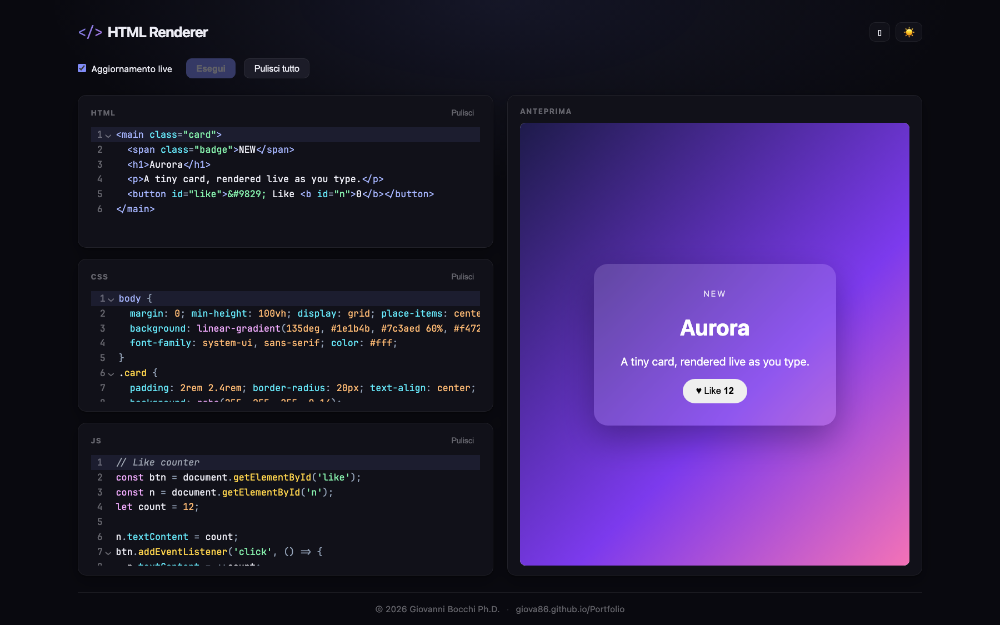

Write HTML, CSS and JS, see it rendered live.
HTML Renderer is a small playground for front-end snippets: write HTML, CSS and JavaScript in three separate, syntax-highlighted editors and see the result rendered next to them as you type.
It is meant to be a scratchpad you keep at hand to try a layout, test an idea or debug a snippet, with no project to set up and no server to run.

The preview refreshes a fraction of a second after you stop typing, or on demand with the Run button when live updates are switched off. Your code is saved in the browser, so the next session starts where you left off. Errors raised by your script are reported in a banner under the editors instead of failing silently.
The interface is a React and Vite single-page app that runs entirely in the browser, with no back end. The three sections are combined into one HTML document and loaded into a sandboxed frame, and a small bridge script forwards the errors raised there to the banner. The macOS version wraps the same compiled front end in a thin Swift shell built on WKWebView, which serves the files from inside the app bundle and takes care of file opening, native dialogs and the menu bar.
Language of the whole front end, and of the scripts you run in the preview.
Drives the editors, toolbar, preview and the theme and width toggles.
Dev server and production build of the front end.
The editor component behind syntax highlighting, line numbers, indentation and bracket handling.
Native macOS shell around a WKWebView, packaged as a universal app and a DMG.